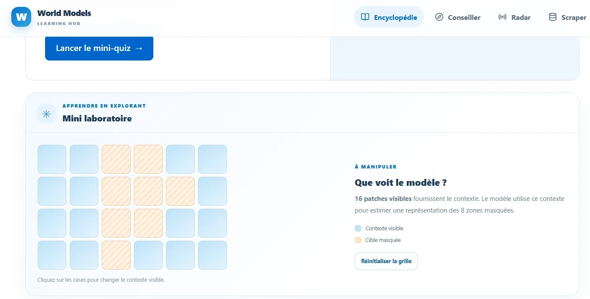
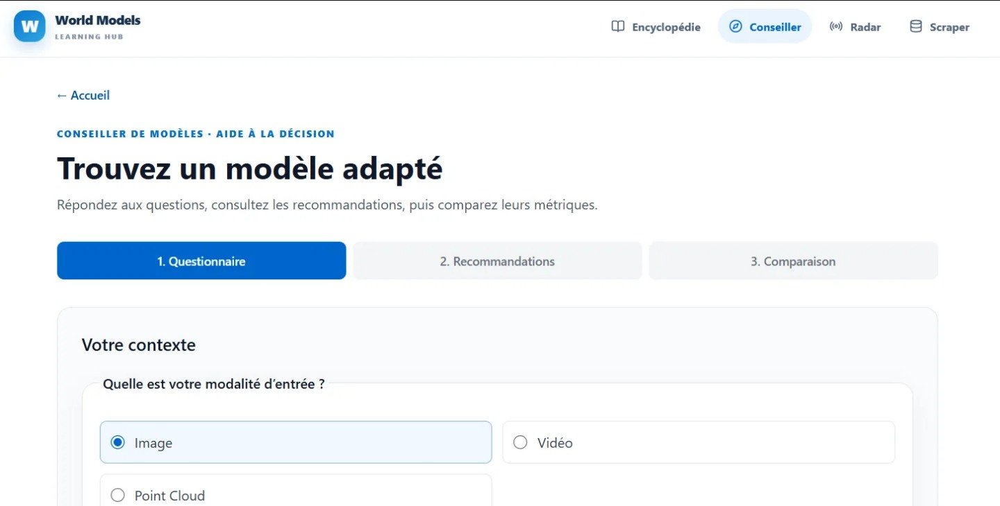
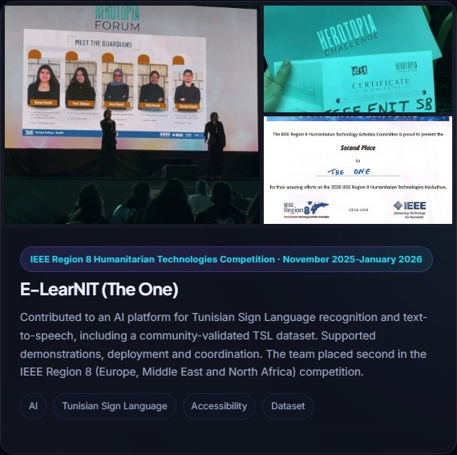
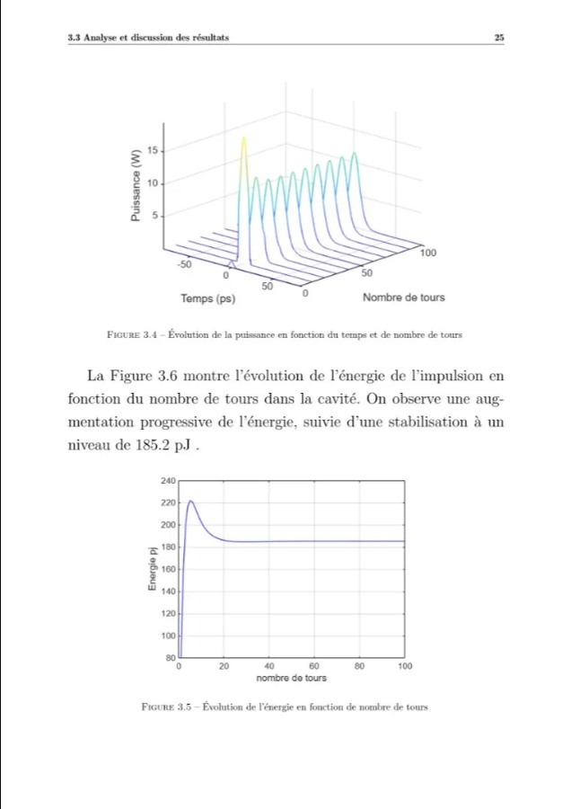

Yosr Jabloun
Telecommunications Engineering student | ENIT
I turn research in AI, computer vision and intelligent communications into practical systems.
Open to a 4+ month AI / Data Science internship
SELECTED TECHNICAL WORKAI | SYSTEMS | RESEARCH



TOOLS
& FIELDS PyTorch
PyTorch TensorFlow
TensorFlow PythonHugging Face
PythonHugging Face OpenCV
OpenCV
& FIELDS